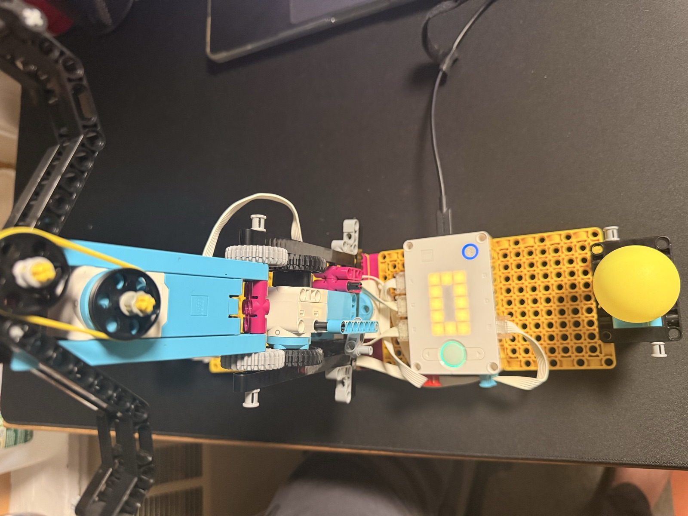
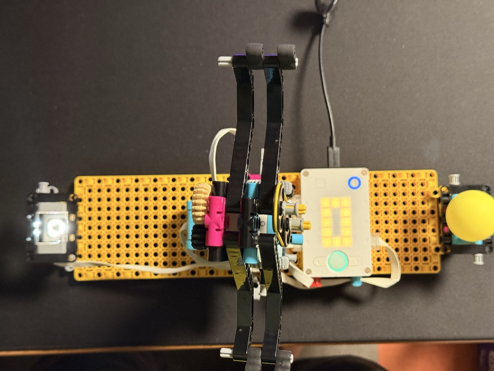
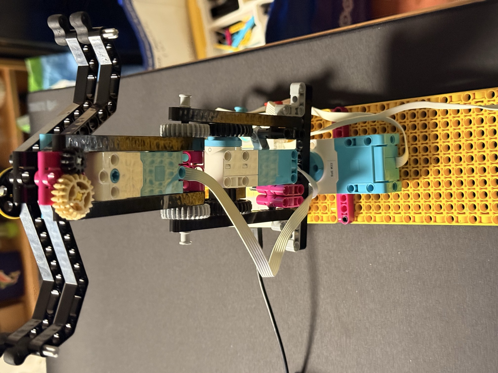

04 M — Sheet 13 / 13
Precisely pick up, move, and place a ping pong ball.

The assignment was a robotic arm that picks up a ping pong ball, carries it, and sets it down, precisely. The whole loop comes from the card: the arm waits with the claw raised out of the way, a ball placed on the color sensor wakes it, it picks the ball up, swings it over to the end base, sets it down, lets go, and goes home to wait for the next one.

Three motors run it. One swings the whole tower at the base, one raises and lowers the head, and one closes the claw, two black beams with rubber tips. The color sensor is the start base: its reflection reading sits at 0 to 2 with nothing on it and 29 to 35 with a ball, so anything over 20 counts as a ball arriving.
The code has one idea: every movement is "go to this encoder number". When the program starts, the robot is sitting in its home position and all three motors call that zero. Lowering means going to -94, swinging means going to -181, and coming back is always just going to 0 again. Nothing accumulates, because every cycle ends where it started, at zero on all three counters.
None of those numbers was calculated. I put the robot in home, ran a small helper that prints the three encoders and the light reading, and moved everything by hand: lower the claw to the ball, read the number. Swing the arm to the end base, read the number. That's also how the two lowering targets ended up different, -94 at the sensor and -90 at the end base, because measuring showed the end base sits about four degrees higher on the lift motor.

The claw closes in two phases. Position control brings it slowly to just short of the ball, then the motor switches to force control: a gentle constant push, about a quarter power, that closes the last bit on its own and keeps pressing lightly for the whole trip. The ball rides held by a light squeeze instead of by a position that might be a little too tight or a little too loose.
The card asks about speed versus accuracy, and the answer here is slow everywhere it matters. Lowering, lifting and closing run at 30 to 40 degrees per second with gentle ramps, the swing runs faster because there's nothing to hit along the way, and every step ends with a one-second pause so the next one starts from a dead stop. The lift locks its position while the claw works and while the arm swings, so the head doesn't sag with the ball in it. One simplification stayed in on purpose: the head lifts all the way back to zero before swinging, higher than it needs, because it was simpler to use the same number everywhere than to add a special carry height.
Both programs below were written with Claude's help, and say so in their first lines.
Still to add: how the runs went, and whether I got to the challenge (chaining two arms to pass the ball along).
# Robotic arm: wait for a ping pong ball on the color sensor, pick it up,
# lift it, swing 180 degrees, lower it to the same height, let go,
# and return home to wait for the next ball.
#
# Setup:
# port F = motor that swings the arm (base rotation)
# port C = motor that opens / closes the claw
# port A = motor that raises / lowers the claw
# port E = color sensor (the ball is placed on top of it)
#
# HOME position (how the robot must be when you press play):
# claw OPEN, claw UP, arm pointing at the START side (the sensor).
#
# Generated with the assistance of Claude, on October 20, 2026.
from hub import port
import runloop
import motor
import color_sensor
# ---------- Ports ----------
ARM = port.F # swings the arm
CLAW = port.C # opens / closes the claw
LIFT = port.A # raises / lowers the claw
SENSOR = port.E # color sensor
# ---------- Positions (measured with calibrate.py, 3rd run, Oct 20) ----------
# Every move is "go to this encoder position". Position 0 = HOME for each
# motor, because main() resets the encoders to 0 right when the program starts.
# IMPORTANT: these numbers only match if you start the program from the SAME
# home position you used during that calibration run.
BALL_THRESHOLD = 20 # sensor reads 0-2 empty, 29-35 with a ball -> 20 sits safely in between
DOWN_START = -94 # LIFT: ball height at the sensor (measured -94/-95)
DOWN_END = -90 # LIFT: ball height at the end base (measured -89/-90, 4 degrees higher)
SWING = -181 # ARM: measured -180/-181 when the claw was over the end base
# ---------- Claw: close slowly, then keep a gentle push on the ball ----------
CLAW_NEAR = -75 # claw position just BEFORE it touches the ball (touched ~-84, gripped at -94)
GRIP_POWER = -2500 # gentle constant push, -10000..10000 (25%). More negative = stronger.
GRIP_TIME = 2000 # ms to let the claw settle onto the ball before lifting
# ---------- Speeds (deg/s). Very gentle on purpose. ----------
SLOW = 40 # lowering and lifting
CLAW_SPEED = 30 # opening and closing
SWING_SPEED = 60 # the swing
RAMP = 100 # how fast the motors speed up / slow down (deg/s^2); default is 1000
PAUSE = 1000 # ms of rest after every movement, so each step happens on its own
# ---------- Helpers ----------
def ball_present():
return color_sensor.reflection(SENSOR) > BALL_THRESHOLD
async def move(which, target, speed, stop=motor.BRAKE):
# Every movement goes through here: same gentle ramps, then a pause
# so the next step only starts after this one has fully settled.
await motor.run_to_relative_position(which, target, speed,
stop=stop,
acceleration=RAMP,
deceleration=RAMP)
await runloop.sleep_ms(PAUSE)
# ---------- One function per movement ----------
async def wait_for_ball():
# Block here until something bright is sitting on the sensor...
await runloop.until(ball_present)
# ...then give the ball (and the hand that placed it) half a second to settle.
await runloop.sleep_ms(500)
async def lower(height):
# HOLD keeps the claw at this height while the claw works.
await move(LIFT, height, SLOW, stop=motor.HOLD)
async def raise_up():
# HOLD keeps the arm from sagging while it swings with the ball.
await move(LIFT, 0, SLOW, stop=motor.HOLD)
async def close_claw():
# Phase 1: position control, slow, up to just before the ball.
await move(CLAW, CLAW_NEAR, CLAW_SPEED, stop=motor.COAST)
# Phase 2: force control. The motor now just pushes gently, all the time:
# it closes the last bit on its own, and keeps pressing the ball lightly
# for the whole trip (nothing turns this off until open_claw).
motor.set_duty_cycle(CLAW, GRIP_POWER)
await runloop.sleep_ms(GRIP_TIME)
async def open_claw():
motor.stop(CLAW) # stop pushing
await move(CLAW, 0, CLAW_SPEED) # open slowly back to the home position
async def swing_to_end():
await move(ARM, SWING, SWING_SPEED)
async def swing_to_start():
await move(ARM, 0, SWING_SPEED)
# ---------- Main program ----------
async def main():
# "Where the robot is right now" becomes position 0 for every motor.
# This only works if the robot is in the HOME position when you press play!
motor.reset_relative_position(ARM, 0)
motor.reset_relative_position(CLAW, 0)
motor.reset_relative_position(LIFT, 0)
while True:
print("Waiting for a ball...")
await wait_for_ball()
print("Ball detected, reflection =", color_sensor.reflection(SENSOR))
# 1. Pick the ball up
print("lower")
await lower(DOWN_START)
print("close claw")
await close_claw()
print("lift")
await raise_up()
# 2. Carry it to the end location
print("swing to end")
await swing_to_end()
# 3. Put it down at the end base
print("lower")
await lower(DOWN_END)
print("open claw")
await open_claw()
print("lift")
await raise_up()
# 4. Go home and wait for the next ball
print("swing home")
await swing_to_start()
runloop.run(main())# Calibration helper for robotic_arm.py
# Put the robot in the HOME position (claw open, claw up, arm pointing at the
# sensor), press play, then move each part BY HAND and read the numbers in
# the console. Generated with the assistance of Claude, on October 20, 2026.
from hub import port
import runloop
import motor
import color_sensor
async def main():
motor.reset_relative_position(port.A, 0)
motor.reset_relative_position(port.C, 0)
motor.reset_relative_position(port.F, 0)
while True:
print("A (lift):", motor.relative_position(port.A),
" C (claw):", motor.relative_position(port.C),
" F (arm):", motor.relative_position(port.F),
" E (light):", color_sensor.reflection(port.E))
await runloop.sleep_ms(300)
runloop.run(main())